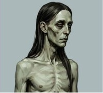

Sealed Record No. 3,333 · Est. Outside of Time
Order of Bartholomew
3,333 algorithmically unique avatars — mutated rogues dressed in five centuries of plundered history, stitched together with the grit of modern street culture.
No kings. No masters. Only the Order.
About the Order
The Order of Bartholomew is a sealed record of 3,333 algorithmically unique avatars, mutated rogues who exist outside of time, dressed in garments plundered from five centuries of history and stitched together with the grit of modern street culture. A 15th‑century doublet worn over a punk vest. A WWI trench coat next to a slouchy beanie. There is no era here, only the Order.
Each member carries a physical mutation as their base tier — white, black, green, albino, or the exceedingly rare lizard‑skinned — before being dressed in one of hundreds of possible combinations across seven trait layers: background, skin, outfit, hair, headwear, glasses, and necklace. Most walk bare‑headed, unadorned, unarmed. A chosen few carry relics — chains, ankhs, tribal amulets — that mark them as something rarer still.
This isn't a collection of heroes. It's a ledger of deserters, drifters, and dissidents who answer to no crown and no institution, bound only to each other, and to the Order that gave them shape.

- Total Supply
- 3,333 Avatars
- Trait Layers
- 7 Background · Skin · Outfit · Hair · Headwear · Glasses · Necklace
- Visual Concept
- Anachronistic outcasts fusing 15th–19th c. historical garments with modern street culture
- Rarest Item
- Oversized Heavy Tribal Bone Amulet 11 mints · 0.33%
Specification & Rarity Breakdown
The complete technical record of all seven trait layers — exact mint counts and rarity percentages, set down as a permanent ledger. Break each seal below to inspect a category.
Skin Archetypes
Physical mutations establish the base tier for every rogue in the Order.
| Skin Variant | Mint Count | Collection Rarity |
|---|---|---|
| White | 1,620 | 48.60% |
| Black | 828 | 24.84% |
| Green | 420 | 12.60% |
| Albino | 301 | 9.03% |
| Lizard | 164 | 4.92% |
Anachronistic Outfits
Garments range from common street apparel to ultra-rare historical armor.
Grail Armor & Outfits< 3%
| Item | Mints | Rarity |
|---|---|---|
| 15th C. Doublet in Crimson Velvet | 49 | 1.47% |
| Trench Coat | 65 | 1.95% |
| 1910s WWI Trench Coat | 65 | 1.95% |
| Silver Tracksuit | 78 | 2.34% |
| 1820 Convict Stripes | 86 | 2.58% |
| Hauberk | 91 | 2.73% |
Mid-Tier Apparel3% – 7%
| Item | Mints | Rarity |
|---|---|---|
| Punk Vest | 131 | 3.93% |
| Puffed Renaissance Shirt | 132 | 3.96% |
| 1950s Greaser Leather Jacket | 133 | 3.99% |
| 16th C. Tudor Jerkin | 135 | 4.05% |
| Tuxedo | 140 | 4.20% |
| 1940s Bomber Pilot Jacket | 143 | 4.29% |
| Denim Jacket | 190 | 5.70% |
| Ripped Band Tee | 191 | 5.73% |
| 1920s Gangster Pinstripe Vest | 207 | 6.21% |
| Athletic Raglan | 230 | 6.90% |
Common Garments> 7%
| Item | Mints | Rarity |
|---|---|---|
| Retro Baseball | 234 | 7.02% |
| Classic Fitted Longsleeve | 279 | 8.37% |
| Red Longsleeve | 305 | 9.15% |
| Blue Shirt | 313 | 9.39% |
| Unclothed / None | 136 | 4.08% |
Background Environments
| Item | Mints | Rarity |
|---|---|---|
| Bar | 93 | 2.79% |
| Basketball Court | 95 | 2.85% |
| Neutral Taupe | 385 | 11.55% |
| Charcoal | 404 | 12.12% |
Artifacts & Relics (Necklaces)
The rarest adornments carried by the Order — few are chosen to bear them.
| Item | Mints | Rarity |
|---|---|---|
| ◆ Oversized Heavy Tribal Bone Amulet | 11 | 0.33% |
| Large Gold Egyptian Ankh Medallion | 21 | 0.63% |
| Heavy Metal Padlock Leather Collar | 65 | 1.95% |
| Thick Leather Choker with Silver O-Ring | 119 | 3.57% |
| Diamond Anarchy Symbol Chain | 173 | 5.19% |
| Chunky Gold Cuban Link Chain | 430 | 12.90% |
| None | 2,514 | 75.43% |
Eyewear
| Item | Mints | Rarity |
|---|---|---|
| Gold Monocle with Chain | 52 | 1.56% |
| Star-Shaped Holographic Sunglasses | 96 | 2.88% |
| Hot Pink Heart-Shaped Glasses | 176 | 5.28% |
| Tinted Viper Sunglasses | 302 | 9.06% |
| Thick Black Square Glasses | 310 | 9.30% |
| Classic 3D Movie Glasses | 469 | 14.07% |
| None | 1,928 | 57.85% |
Headwear
| Item | Mints | Rarity |
|---|---|---|
| Cowboy Hat | 100 | 3.00% |
| 1980s Sweatband | 211 | 6.33% |
| 1940s WWII Pilot Leather Helmet | 242 | 7.26% |
| 1950s Sailor Dixie Cup Hat | 244 | 7.32% |
| 1920s Classic Wool Fedora | 347 | 10.41% |
| 1910s Newsboy Cap | 392 | 11.76% |
| 2010s Slouchy Beanie | 444 | 13.32% |
| Bare-headed / None | 1,353 | 40.59% |
Hairstyles
| Item | Mints | Rarity |
|---|---|---|
| Bob | 154 | 4.62% |
| Sculpted Flat Top | 187 | 5.61% |
| Punk Mohawk | 191 | 5.73% |
| Emo | 197 | 5.91% |
| Basic | 204 | 6.12% |
| Slicked-Back Pompadour | 204 | 6.12% |
| Long Hair | 216 | 6.48% |
| Bare / None | 1,980 | 59.41% |
Whitelist Rites
Fulfil each rite below, seal it with your mark, then present your name and wallet for judgement.
Swear Fealty on X
Open our page, follow the Order, then return and seal your oath.
Spread the Word
Open the decree, like and repost it, then return and seal.
Summon 2 Kin
Comment on the decree tagging 2 kin, then paste your comment link below.